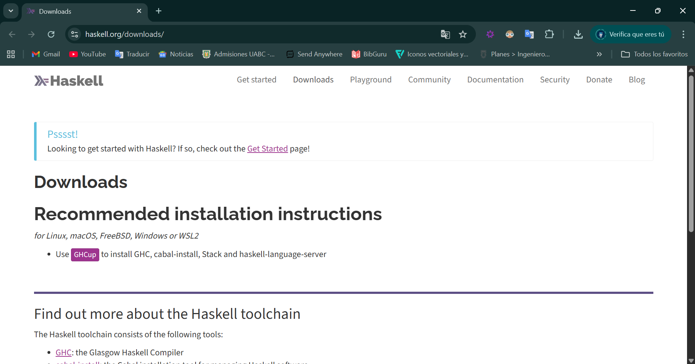
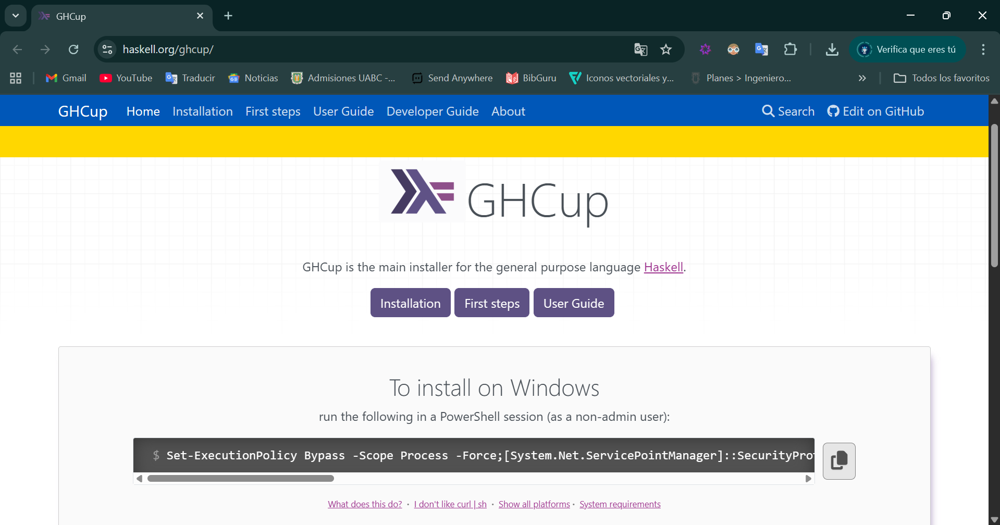
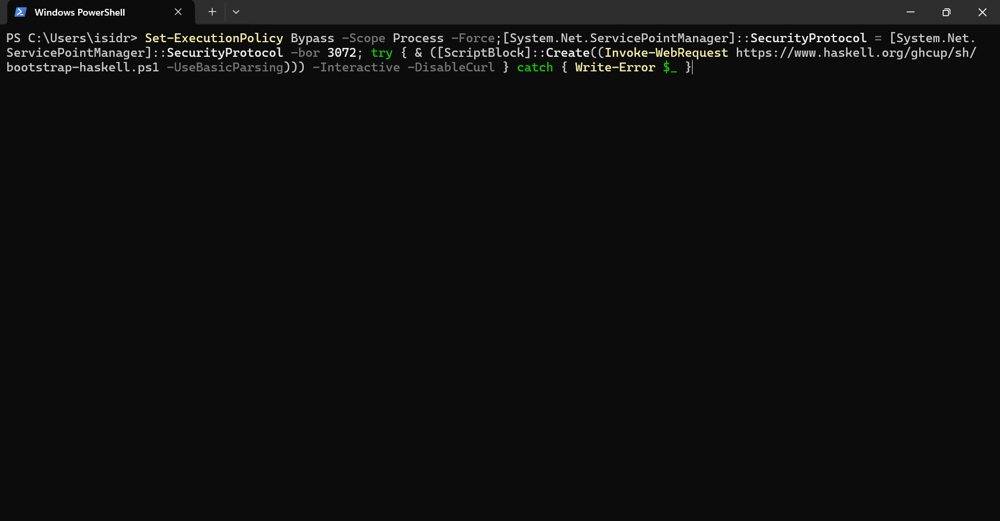
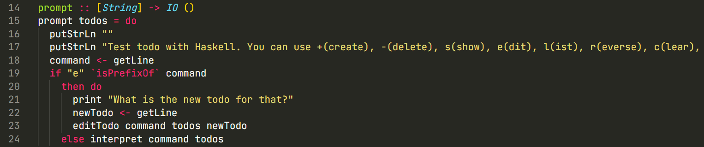

Practica3
Práctica 3: Haskell
Isidro Francisco Pérez Paz - 377806
Instalación del entorno de Haskell
Descarga entorno
Para poder utilizar Haskell:
-
Dirigete a la pagina de Haskell y ve a la pestaña de Descargas Dentro te va aparecer esto: 
-
Pulsa en el recuadro morado “GHCup” Ya dentro copia el comando que aparece aqui: 
-
Dirigete a PowerShell pegalo, ejecutalo y instala todo Nota: no lo ejecutes como administrador. 
Funcionamiento de la aplicación TODO escrita en Haskell
- Inicialización del proyecto
- Se crea un nuevo proyecto usando Stack como plantilla.
- Se establece el archivo package.yaml o .cabal, se configuran dependencias mínimas y se pueden añadir otras como dotenv, open-browser.
- Se compila/testea con stack build, stack test, stack run.
- Ejecución de la aplicación
- Al ejecutar
stack run, se muestra un menú con comandos disponibles:
- Luego se invoca la función
prompt []con la lista de todos inicialmente vacía.
- Al ejecutar
- Bucle interactivo
- Dentro de
prompt todos, se imprime un mensaje para el usuario pidiendo un comando. - Se lee la línea de entrada del usuario.
- Si el comando comienza con ‘e’ (editar), se primero pide “What is the new todo for that?” y se lee la nueva descripción, luego llama
editTodo. - En otro caso, se llama a
interpret command todosque analiza el comando y actúa según el prefijo. 
- Dentro de
- Interpretación de comandos
Dependiendo del comando dado:
- (’+’: ’ ’ : todo): agrega un nuevo todo al frente de la lista: construye la nueva lista
todo : todos, y vuelve apromptcon los nuevos todos. - (’-’: ’ ’ : num): lee
numcomo índice, llamadeleteOne (read num) todos. Si devuelveNothing, imprime “No TODO entry matches the given number” y vuelve al prompt con la lista sin cambios; siJust todos', entonces pasatodos'al prompt. - (’s’: ’ ’ : num): muestra el elemento número
numsi existe, usandoshowOne. Si no, muestra mensaje de error. Luego vuelve al prompt con la misma lista. - “l”: lista todos los elementos actuales: calcula
length todos, imprime cuántos en total; hacenmapM_ putTodo (zip [0..] todos)(imprime índice y el todo) luego vuelve al prompt. - “r”: muestra la lista invertida: calcula
reversedTodos = reverseTodos todos, luego similar al, imprime la invertida, luego vuelve al prompt con la lista original aún intacta (importante: no la sustituye). - “c”: limpia la lista: imprime “Clear todo list.” y llama
prompt [](lista vacía). - “q”: termina el bucle:
interpret "q" todos = return (). - Cualquier otro comando — imprime
Invalid command: \`` y vuelve al prompt con la lista sin cambios.
- (’+’: ’ ’ : todo): agrega un nuevo todo al frente de la lista: construye la nueva lista
- Funciones auxiliares
- deleteOne :: Int -> [a] -> Maybe [a]: elimina el elemento en índice dado, si existe; de lo contrario
Nothing. - showOne :: Int -> [a] -> Maybe a: devuelve el elemento en índice dado, si válido; de lo contrario
Nothing. - editIndex :: Int -> a -> [a] -> [a]: cambia el elemento en índice
iax, construyendo nueva lista (inmutabilidad). - editTodo :: String -> [String] -> String -> IO (): se encarga del flujo cuando se edita: parsea el índice desde comando (
'e': ' ' : num), llamaeditOne, imprime “Old todo is …”, “New todo is …”, luego imprime el nuevo estado (número de elementos y lista), y llamaprompt newTodos. - reverseTodos :: [a] -> [a]: invierte la lista implementando recursivamente
go xs [].
- deleteOne :: Int -> [a] -> Maybe [a]: elimina el elemento en índice dado, si existe; de lo contrario
Estructura del código
- app/Main.hs: donde está la función
main, imprime los comandos y llamaprompt []. - src/Lib.hs: contiene la lógica del prompt, la interpretación de comandos, y las funciones auxiliares como
deleteOne,showOne,editIndex, etc. - test/Spec.hs: contiene al menos una prueba: se explica en el artículo que prueban
editIndex, por ejemplo. - package.yaml / stack.yaml: configuración del proyecto con dependencias. El tutorial menciona añadir
dotenvyopen-browseraunque para la funcionalidad básica del TODO no son estrictamente necesarias.